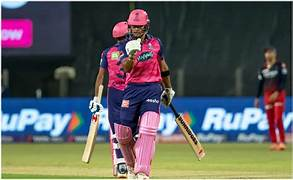

On a Wankhede wicket that had a lot of help for the bowlers, Rajasthan Royals lost Yashasvi Jaiswal early in the chase and then Sanju Samson and Jos Buttler got out in quick succession to leave the team at 48/3 in a chase of 126. Although the target was not that big, there was an avenue for MI to exploit but Parag shut that out with his well-paced innings of 54 not out in 39 deliveries, which included five fours and three sixes.
After all the backing he has received from the team management over the years, this has been a season of repaying that faith as Riyan Parag continued his good run in IPL 2024. And the success he has experienced so far was a result of simplifying things and replicating what he has been doing well in domestic cricket.
Parag, who started his IPL journey in 2019, began in a promising fashion as he scored 160 runs in five innings, at an average of 32, in his maiden season. But the subsequent editions did not turn out so well for him, with the batter crossing 100 just once in four editions and ending up with averages of below 20 in each. But this season he has finally hit the straps.
"I have said it before, when I play domestic (cricket) this is the exact type of situation I go in to bat. When Jos [Buttler] bhai got out, and Ash [R Ashwin] bhai got out a little after, I was like, 'okay, this is what I do. This is what I've been doing for the last six months playing domestic cricket'. So it was pretty simple to calculate everything," he said.
© 2024 Knowledge Hub. All Rights Reserved.